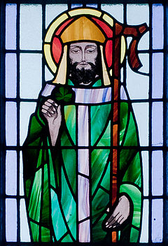

Welcome to the practice 1 page of Cole Cooper. My page is about Saint Patrick's Day. St. Patrick's Day is a religious and cultural holiday held on 17 March, the traditional death date of Saint Patrick (c.385 c.461), the foremost patron saint of Ireland. Click this link to learn more about St. Patricks Day!
Click on this video to learn more about the history of St. Patrick's Day!
Contact Info
Cole Cooper
c459c999@ku.edu